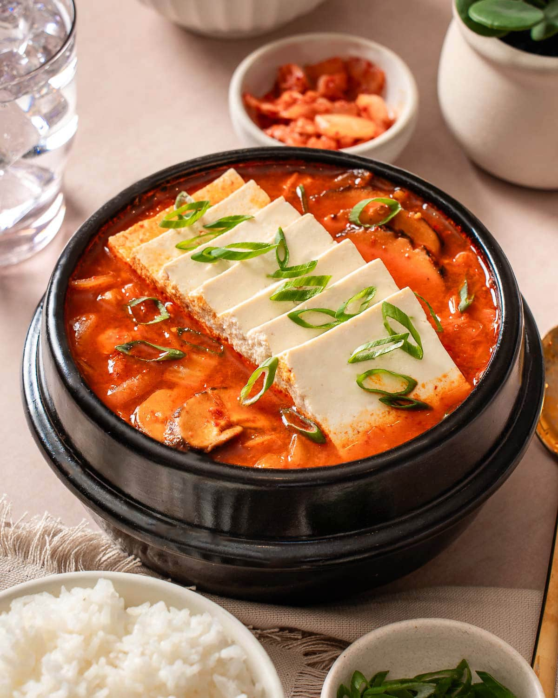
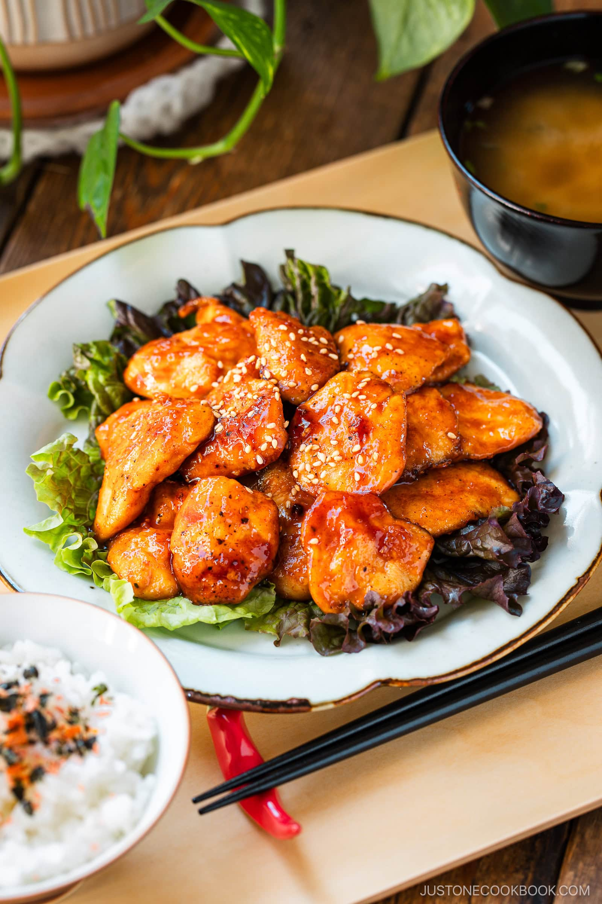
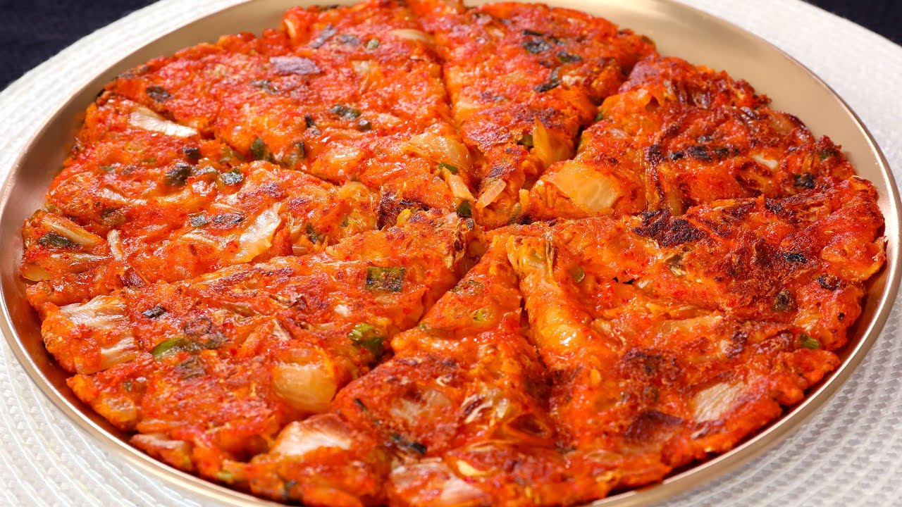
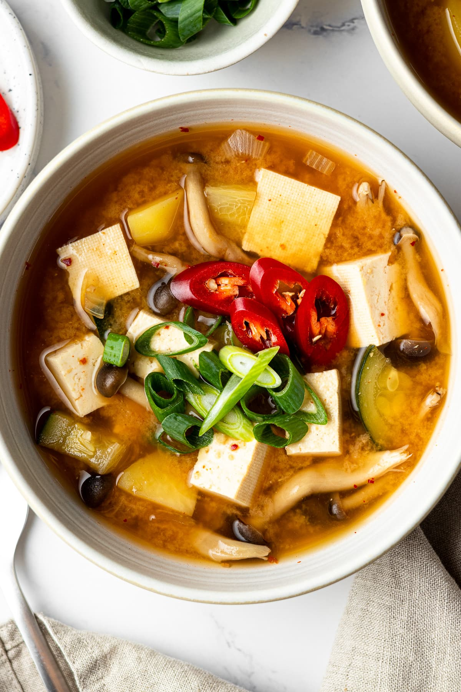

Kimchi Jjigae (Kimchi Stew)
A warm, spicy Korean stew made with aged kimchi, perfect with rice.
Ingredients:- 1 cup Misha Kimchi
- 200g pork belly or tofu
- 1 onion, sliced
- 1 tbsp gochujang (Korean chili paste)
- 2 cups water or broth
- Fry pork/tofu with onions until lightly browned.
- Add kimchi and stir well.
- Mix in gochujang and pour in broth.
- Simmer for 20 minutes and serve hot.

Bulgogi (Korean BBQ Beef)
Sweet and savory grilled beef marinated with soy, garlic and sesame oil.
Ingredients:- 500g sliced beef
- 2 tbsp soy sauce
- 1 tbsp sugar
- 1 tbsp Korean sesame oil
- 1 tsp minced garlic
- Combine marinade ingredients in a bowl.
- Add beef and let it marinate for 1–2 hours.
- Stir-fry or grill until browned and cooked through.

Gochujang Honey Chicken
Sweet and spicy chicken glazed in gochujang and honey—perfect for rice bowls.
Ingredients:- 200g chicken thigh
- 1 tbsp gochujang
- 1 tbsp honey
- 1 tbsp soy sauce
- 1 tsp sesame oil
- 1 clove garlic, minced
Instructions:
- Mix gochujang, honey, soy sauce, garlic, and sesame oil.
- Marinate chicken for 10–15 minutes.
- Pan-fry until cooked through and caramelized.
- Serve with rice and sprinkle with sesame seeds.

Kimchi Jeon (Kimchi Pancake)
A crispy, savory pancake made with kimchi—perfect as a snack or side.
Ingredients:
- 1/2 cup Misha Kimchi, chopped
- 1/2 cup flour
- 1/3 cup water
- 1 egg
- 2 scallions, chopped
- Oil for frying
Instructions:
- Mix all ingredients into a thick batter.
- Heat oil in pan and pour in batter.
- Cook on both sides until golden and crispy.
- Serve with soy sauce dip.

Doenjang Mushroom Soup
A cozy, umami-rich soup made with Korean soybean paste and mushrooms.
Ingredients:
- 1 tbsp sesame oil
- 2 garlic cloves, sliced
- 1/4 onion, sliced
- 1 cup mushrooms
- 1/2 zucchini, sliced
- 1 tbsp doenjang (soybean paste)
- 2 cups water
- Cooked noodles (optional)
Instructions:
- Sauté garlic and onion in sesame oil.
- Add mushrooms and zucchini, cook for 2 min.
- Stir in doenjang and water.
- Simmer for 10–15 min. Add noodles if desired and serve hot.